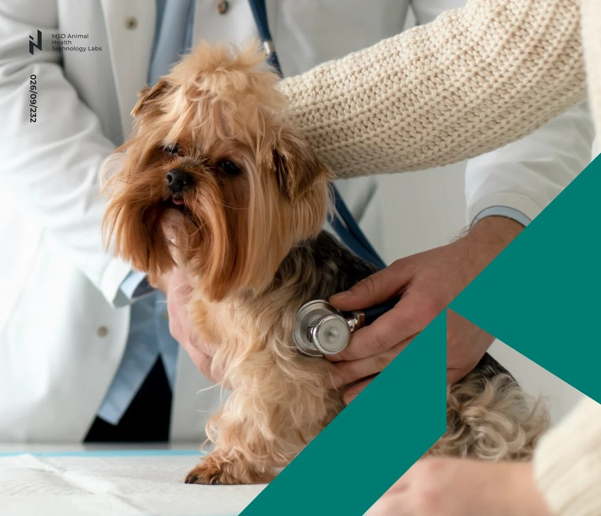

1
Map source events
Review Checkout, Donor Portal, API, CRM, and offline donation events, then mark gaps in ownership and quality rules.
Fundraise Up x Elinext
Saw you are hiring a Senior Data Engineer to own pipelines, warehouse work, and ClickHouse queries. Here is how Elinext can add senior data capacity now, without taking over your product.
Bridge the first data-engineering hire with senior delivery help.
Focus on pipelines, warehouse models, governance, and analytics-ready data.
Leave clear runbooks for the future in-house owner.
That role says Fundraise Up is moving from useful product data to a stronger data platform. Your product now covers Checkout, Campaign Pages, Donor Portal, APIs, and many CRM paths. The hard part is trusted donation data across online, offline, global, and partner flows. If that work waits for one perfect hire, analytics asks pile up. Product, sales, and customer teams lose clear signals.
Engagement model: a dedicated data squad works under your product analytics lead for an eight-week bridge pilot.
Review Checkout, Donor Portal, API, CRM, and offline donation events, then mark gaps in ownership and quality rules.
Build Airflow jobs and Python checks for repeatable loads into ClickHouse, S3, and the analytical warehouse.
Create donor, campaign, and fundraiser marts that make recurring upgrades and local-currency flows easier to query.
Document runbooks, tests, and backlog items, so your first data hire inherits clean work, not debt.
Elinext is a full-cycle software development company, active since 1997. About 700 in-house specialists cover backend, frontend, QA, DevOps, AI/ML, and data work, with no freelancers. Clients include Broadcom, Siemens, Volkswagen, TRUMPF, and TUI. Our delivery is backed by ISO 9001 and ISO 27001. That fits a scaling SaaS team that needs momentum during hiring. You keep product control, while our people handle focused delivery.

A data engineer and QA specialist built Python and MATLAB checks for machine-learning data flows.
The work cut manual checks and raised data accuracy.
Read the case study
One senior Node.js developer helped payments, invoices, SQL, and NoSQL microservices.
The client reported lower operating cost and higher team productivity.
Read the case study